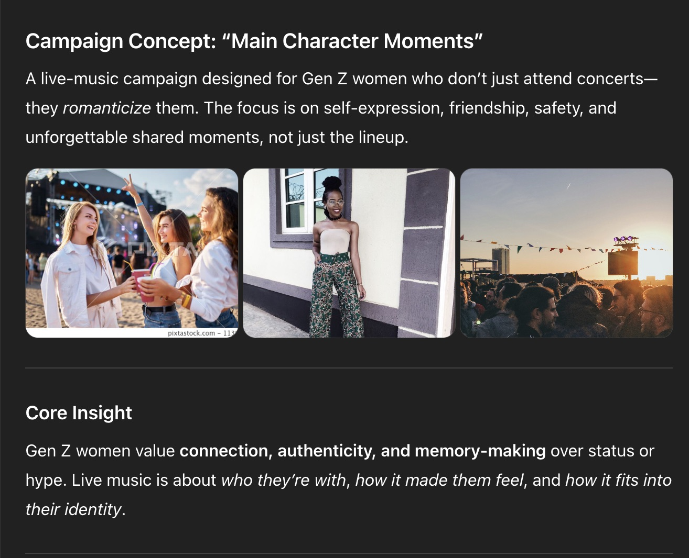
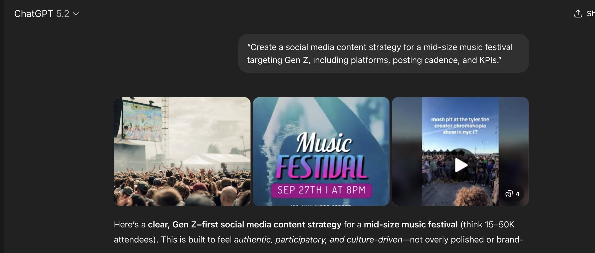
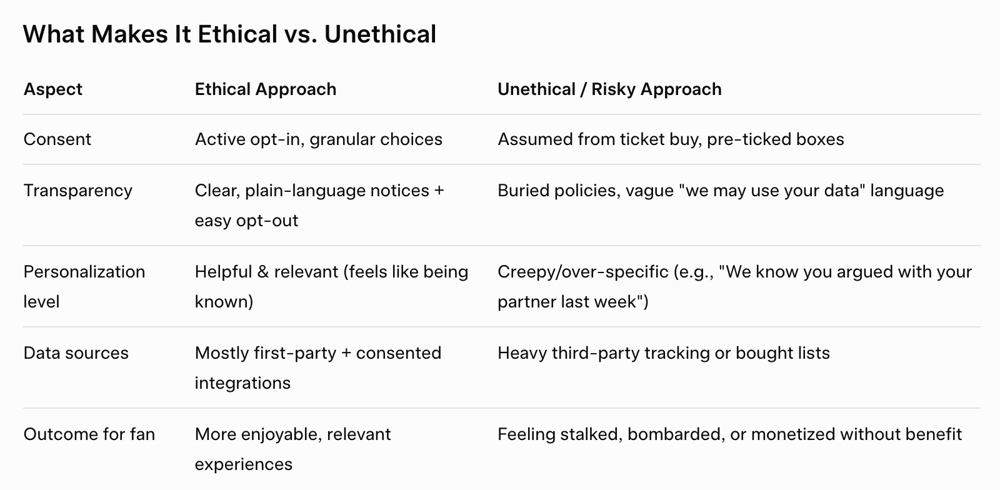

I explored different AI tools and evaluated them using a framework that focused on capabilities, appropriate use, ethics, and transparency. I tested the tools with prompts related to my coursework and interests to see what they did well and where they struggled. This lab helped me think more critically about how AI can fit into my academic and professional workflow while still relying on human judgment and fact-checking.
In this exercise, I compared two popular AI tools, ChatGPT and Grok, by asking them the same marketing-related questions I had been working through earlier in the day. I focused on prompts tied to campaign planning, audience targeting, and creative strategy to see how each platform responded to real, practical marketing challenges. While both tools were quick and generally clear in their responses, they differed in tone, depth, and how well they captured marketing nuance and audience insight. This side-by-side comparison helped me better understand where each platform excels and where they fall short, and reinforced that AI works best as a creative and strategic support tool, and definetly not a replacement for human thinking and judgment.
Capabilities
ChatGPT is good at explaining concepts clearly. It can break down complex ideas, conversations, and equations, making them easier to understand and digest. ChatGPT’s best examples of making complex ideas easier to understand include summarizing research, explaining how algorithms work, and translating between languages. This platform can produce writing in many styles, purposes, and meanings, such as essays, stories/poems, emails, and resumes, slogans/scripts. The platform’s creativity features are vast and constantly improving with every prompt or conversation a user adds. It excels at generating campaign ideas, suggesting topic starters, and listing potential solutions. It can assist with learning and practice by processing and helping users understand foreign languages, coding concepts, interview preparation, and improving academic or professional skills. ChatGPT makes processes easy to follow, creating clear outlines for managing tasks like writing a research paper, formatting a podcast script, solving a math problem, or structuring a marketing plan.
Appropriate Use
ChatGPT is well-suited for tasks like brainstorming, drafting ideas, projects, proposals, or assignments, summarizing information, explaining concepts, and organizing workflow for its users. The platform is best at providing easy-to-follow instructions for early-stage planning and learning. ChatGPT can be counterproductive when it comes to providing up-to-date data, news, or trending topics. The server is not operating in real time, and current event information will most likely not be displayed or communicated correctly to users. It can be inappropriate for sensitive decision-making, for providing medical or legal advice, or for rendering judgment in a given scenario. Although ChatGPT has many uses, it fits best into a larger workflow by assisting those with a lot of work on their plate by organizing tasks, concepts, and ideas, and by helping with brainstorming and creativity.
Ethical Considerations
ChatGPT was trained on a blend of licensed data, data created by human trainers and coders, and publicly available context, while learning language patterns rather than storing or recalling specific documents. Since this data is trained on vast datasets, its output can seem biased at times, especially since most of the data was originally input by white male tech industry experts when the platform was first released. The platform has developed based on what is uploaded to its server – leading to unintentional societal biases in its responses at times, including cultural, gender, racial, or ideological biases. These biases can affect tone, assumptions, and users’ perspectives and decisions. Various questions and concerns have been raised about ChatGPT’s actions regarding intellectual property, attribution, and authenticity, as it can generate content within the blink of an eye that resembles pre-existing language styles without providing proper citations or context to support its rationale. Safeguards for this platform include content moderation, image development rates, and bias-reduction techniques, yet there is still no definitive answer for removing bias from its output to users.
On the other hand, ChatGPT has limitations in its lack of real-time awareness. The platform’s data is not currently live and can sometimes produce dated results. It cannot provide real-time news or track live events, such as current stock prices. Additionally, the platform can be confident, but it is definitely not always accurate. The platform’s page has a sentence below the search bar at the bottom that reads: “ChatGPT can make mistakes. Check important info.” as a CTA alerting users not to trust the platform's information completely. The platform doesn’t come with true understanding or “personal experience”; it will only build emotional responses based on the tone you first input. The platform can also struggle with deep technical precision, such as complex code or mathematical equations, when the user provides a vague prompt. The output quality depends on how specific and to the point the user is with their wording when entering conversation points.



Capabilities
Grok is particularly great at providing advanced reasoning, support, and rationale for math/science-related problem-solving and coding tasks, and at giving users real-time information. It uses integrated web and social media tools, specifically X, to help source and update its information for accuracy. It can think for extended periods to correct errors that the AI service might have initially given the user, before the user has the time to find them, delivering more accurate and well-reasoned answers. Grok is also good at keeping a “neutral” voice and tone in its wording in responses. It’s noted for having a “less censored” personality, which adds to its informal, more human-like tone in its answers.
Grok faces slower response times when a user asks it to complete a deep reasoning task, and it can lead to increased variability and errors when tasked with a larger coding assignment. Some of its limitations also stem from the idea that its data is sourced from X. On this platform, any voice, opinion, bias, or judgment can be written about and posted, leaving Grok at risk of inadvertently eliciting biased information.
Similar to ChatGPT, Grok works best when the user provides specific, straightforward input, which often boosts its success rate in solving an issue or task.
Appropriate Use
Grok is well-suited for solving complex tasks related to mathematical problems, scientific issues, and coding and debugging. It also uses real-time research from the web and X to provide users with up-to-date market analysis and trend monitoring. It is noted that it is even possible to explore controversial topics that other AI systems will not allow. Grok can be counterproductive when you want to ask it a quick question, like what the weather might be like later in the day, because of its typical paragraph-long responses. Sometimes this data can also be misinformation or incorrect because the service often prioritizes speed over accuracy.
Ethical Considerations
Similarly, Grok was also pre-trained on a large amount of publicly available internet data, which combined datasets curated and reviewed by human AI specialists. In later versions, the AI service has integrated the social media platform X into its regular database, strengthening its ability to present current-event data to users. Ethically speaking, this can be a problem for X users alone who don’t feel comfortable having their information filtered through an AI platform and who may be at risk of misinformation and intellectual property infringement. Potential biases can stem from its training on unfiltered web content, leading to polarized, stereotypical material. Grok is also noted to have censorship issues and political imbalances in its response patterns.
Broader Reflections
Prompt: “Create a social media content strategy for a mid-size music festival targeting Gen Z, including platforms, posting cadence, and KPIs.”
ChatGPT Response & Thoughts: ChatGPT gave me a fleshed-out, Gen-Z-focused social media content strategy for a mid-size music festival that prioritizes culture, authenticity, and participation over straight promotion. The strategy prioritizes TikTok and Instagram as primary platforms, with Snapchat and YouTube Shorts as supporting platforms, and outlines a content timeline spanning 4-8 weeks pre-festival, festival week, and 2-4 weeks post-festival.
It includes clear posting cadences: 4-6 TikToks per week pre-event, 3-5 per day during the festival, 3-4 Instagram feed posts per week, daily Stories increasing to 10-20 frames on-site, and high-volume Snapchat coverage during the event.
The plan is built around five content pillars: festival identity, artist discovery, experience-first storytelling, UGC, and FOMO. The strategy works with micro-influencers (5K-50K followers) for real-time, authentic content. ChatGPT provided strategies to measure KPIs for awareness, engagement, conversion, and community health, positioning social media as a tool for long-term community building, not just ticket sales.
Grok Response & Thoughts: Grok provided me with a very similar outline with details that felt “industry-ready” and very sturdy. It mapped out a social media strategy for the festival, recommending 2 primary platforms (TikTok and Instagram) with a posting cadence that ramps up to 5-7 posts per week on TikTok and daily Stories in the final months. After that, it outlined 7 key content pillars, suggested focusing on short-form video for virality, and defined 9 specific KPIs to track success, including engagement rates of 3-8%+ and strong UGC volume using a branded hashtag of choice.
Prompt: “Create a campaign that feels authentic to Gen Z without using trends, slang, or memes.”
ChatGPT Response & Thoughts: ChatGPT gave me a very generic framework, with little depth or understanding of why the service chose that specific approach to showcasing marketing appeal. It first prompted me with “Gen Z responds to meaning, transparency, and agency. This campaign positions the brand as a listener and facilitator, not a narrator.” This is, quite frankly, something I could have taught myself better without this tool. The opening “purpose” of a campaign should reflect what the marketer is really trying to convey to the audience, not muddy it further.
ChatGPT then gave me a list of very bland engagement techniques, ones that are typically used and seen in close to every surface-level, quickly made campaign. My favorite section was the “Visual Direction” key, where ChatGPT provided me the most basic creative scheme/baseline to work with:
“Visual Direction: Natural lighting, Neutral color palette, Handwritten or simple typography, No filters, no overlays, no music unless user-provided Everything feels documented, not produced.”, and outlines a content timeline spanning 4-8 weeks pre-festival, festival week, and 2-4 weeks post-festival.
Grok Response & Thoughts: The first thing Grok presented me was with a similar “core idea” opener, but gave me a little more “fluff” in the feedback: “Show—without exaggeration or corporate gloss—what your company really does every day: the unglamorous parts, the small decisions, the actual people behind the product/service, and the real impact (good and bad) it has.
The campaign treats Gen Z as intelligent adults who deserve the unfiltered version, not a sales pitch. This approach builds trust through radical transparency and consistency over time, rather than one-off "relatable" stunts. It should feel like stumbling across an employee's personal video diary or a no-BS internal documentary series—something that wasn't made "for the kids" but exists as it is.”
However, as the AI tool kept generating responses, I noticed that the techniques and ideas it provided felt overused, redundant, and unoriginal. For example, it gave me components to integrate into my campaign, including: “Day in my life” videos, behind-the-scenes videos, and livestreaming Q&A sessions. Once again, this felt generic and something I’ve seen a million times as a student marketer.